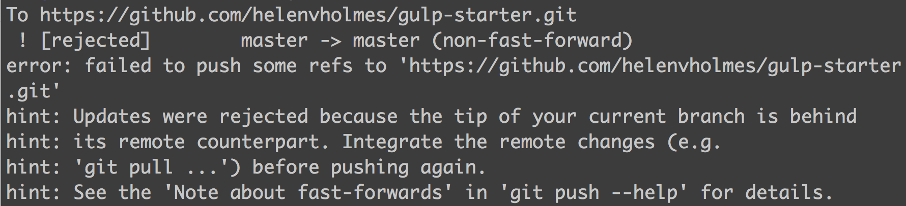

A web application starter using Gulp, node-sass, Browserify, Browsersync, Imagemin, Gulp-notify, Jade, and Watchify for super fast builds. Built off of Dan Tello's Gulp Starter which is really rad.
First of all, this project assumes you have Node installed. If you don't, install that first.
If you do have Node installed, navigate to the gulp-starter directory and install your dependencies:
npm install
Then run the project with:
gulp
You don't even have to open your web browser.
You can automatically deploy from your master or feature branches by using the gulp deploy task. This will take whatever is currently in the build/ folder and update the gh-pages branch with its contents, with the benefit of not having to swap back and forth between the two. If you run into fast-forwarding issues and need to force push, check the deploy task comment for a fix.
It's not rare to get this error:

This is a fast-forward error. In essence it's saying you need to deploy before you can pull. However, in this instance, we recommend a force-push as your gh-pages branch should not be something you track as a team and should be checked locally before pushing. If you get this error, check the deploy task, line 9 for additional information on how to proceed.
The Gulp tasks are each packaged into their specified functionality with config.js setting global variables across the project like directory locations. If you need more functions that aren't in here consider contributing back.
.editorconfigThis project uses an .editorconfig. This allows us to make sure that things like whitespace changes don't create useless git commits and allows consistency across a larger team of developers. It will apply these changes locally after you close and reload them. You can read about that design choice here.
If you don't have a plugin for your editor of choice, you can download plugins for EditorConfig from the EditorConfig site.
build/ not in the .gitignore?build/ is not in the .gitignore because it needs to be tracked in order for the gulp deploy function to work. Annoying, but necessary. If you have suggestions that would make working with this easier consider contributing back.